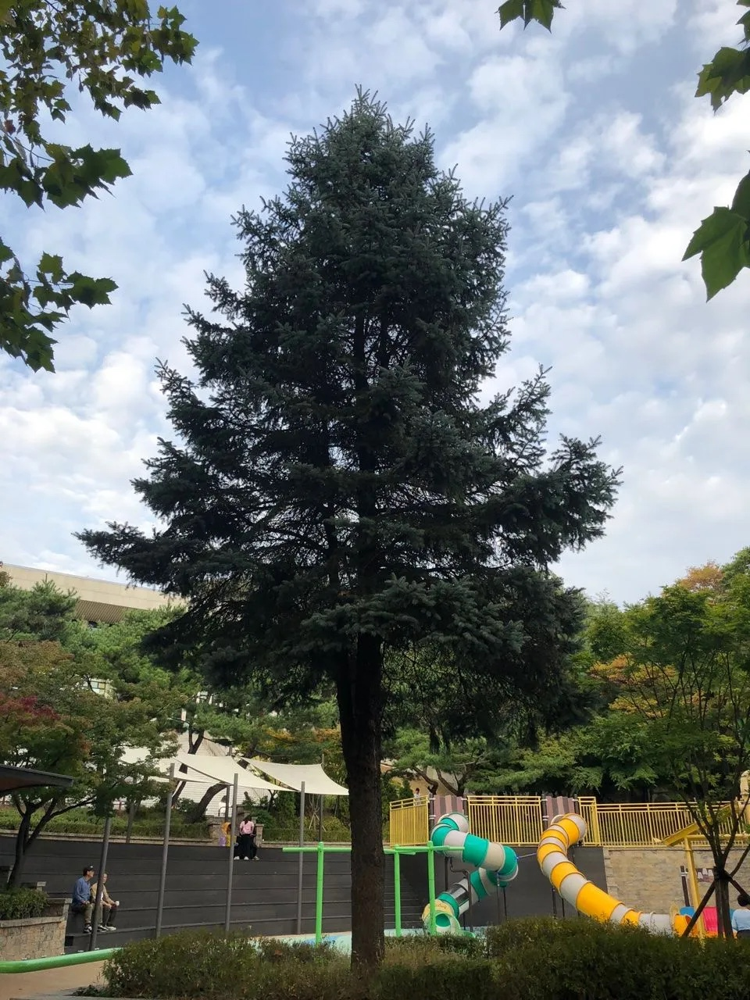

Gallery

Details
- 학명: Picea pungens
- 영문명: Blue Spruce
- 분류: 소나무과 가문비나무속
- 특징:
- 높이: 품종에 따라 2-4m까지 성장
- 잎: 은청색 또는 실버블루 색상의 바늘잎
- 수형: 원추형으로 아름다운 모양을 형성
- 주요 장점:
- 추위에 매우 강함 (영하 40도까지 견딤)
- 토양 적응력이 좋아 다양한 환경에서 잘 자람
- 사계절 내내 푸른 잎을 유지
- 아름다운 수형과 독특한 잎 색상으로 관상가치가 높음
- 용도:
- 정원수
- 크리스마스 트리
- 조경수
- 고급 주택 조경에 적합
- 관리:
- 물 관리: 토양 상태와 환경에 따라 조절 필요
- 햇빛: 충분한 햇빛 필요, 반음지에서도 생육 가능
- 토양: 산성, 알칼리성, 중성 토양에서 모두 생육 가능
- 주요 품종:
- '에릭 브라함'(Erich Frahm): 밝은 은청색 잎, 빽빽한 수형
- '후푸시'(Hoopsii): 영국 왕립원예협회 수상, 고급스러운 실버블루 색상
Location
경기도 부천 원미구 원미동, 원미공원